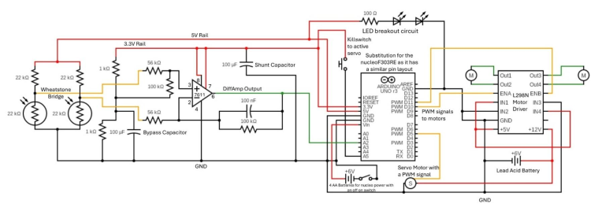
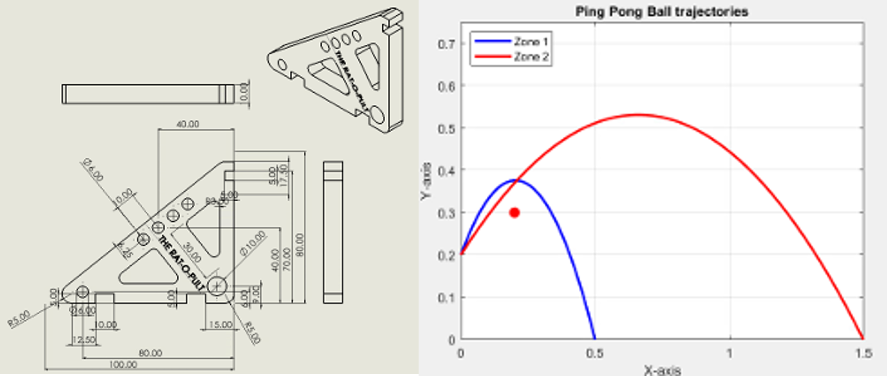

Autonomous Line-Following & Ball-Launching Robot ("Rat Mobile")
End-to-end mechatronic vehicle featuring a custom water-jet cut aluminum chassis, $22\text{ k}\Omega$ LDR Wheatstone bridge & $7611$ differential op-amp optical tracking, STM32 Nucleo-F303RE Mbed firmware, and dual elastic catapults ("The Rat-O-Pult").
Final Competition Build ("Rat Mobile")

Sub-Team Architecture & Integration
Developed for the ENGR204 robotics challenge at Lancaster University. Leading the Electronic Design, Assembly & Testing sub-team alongside Alexander Lonsdale, we integrated custom soldered sensor boards and motor control electronics onto a rigid aluminum chassis engineered by the Mechanical sub-team.
- Autonomous Track Navigation: Tracks a continuous course using an analog LDR differential amplifier, stopping automatically via a front-mounted micro-switch (`killswitch`) at the end wall.
- Dual-Zone Projectile Delivery: Upon wall contact, a servo-actuated release triggers two independently calibrated 3D-printed catapults ("The Rat-O-Pult") into Zone 1 ($0.5\text{ m}$) and Zone 2 ($1.5\text{ m}$).
Interactive Diff-Amp & Mbed Steering Simulator
Simulates the exact control logic running on the Nucleo-F303RE: the $7611$ differential amplifier outputs $0.1\text{ V}–3.3\text{ V}$ centered at $1.56\text{ V}$ on the line, driving pulse-width steering intervals (`timeSleep`) until the front bumper `killswitch` triggers the dual-catapult servo.
Electronic & Control System Architecture
Signal conditioning, power rail isolation, and actuation topology engineered for the STM32 Nucleo-F303RE.
Engineering Deep-Dive: Firmware, Electronics & Mechanical Design
Inspect the production Mbed OS C++ firmware, the $7611$ op-amp & ray-traced light shield design, and the SolidWorks chassis & catapult selection matrix.
Production Mbed OS C++ firmware deployed on the Nucleo-F303RE for final testing week (Figure 6.5), integrating differential amplifier sampling, pulsed corner steering, wall-switch braking, and timed servo catapult release.
#include "mbed.h"
// Differential Amplifier & End-Wall Killswitch Inputs
AnalogIn analog_value(A2);
AnalogIn killswitch(A5);
int main()
{
PwmOut motorA_PWM(D10); // Right side motor
PwmOut motorB_PWM(D11); // Left side motor
PwmOut servo(D5); // Catapult release servo PWM
motorA_PWM.period(0.002f); // 500 Hz Motor PWM frequency
motorB_PWM.period(0.002f);
const float basePWM = 1.0f; // Set motor speed duty cycle
const float targetLow = 1.55f; // Lower center-line voltage bound (V)
const float targetHigh = 1.57f; // Upper center-line voltage bound (V)
const int timeSleep = 5; // Steering pulse interval (ms)
while (1) {
float rec1 = analog_value.read() * 3.3f; // Read 7611 diff-amp output
printf("Output from difAmp: %fV\n", rec1);
int stop = killswitch.read();
if (stop == 1) { // Servo run command and killswitch to end track run
motorA_PWM.write(0);
motorB_PWM.write(0);
thread_sleep_for(1750);
printf("%i\n", stop);
servo.write(0.99f);
servo.period(0.002f);
thread_sleep_for(1750);
servo.write(0.2f);
servo.period(0.002f);
thread_sleep_for(1750);
break;
}
if (rec1 > targetLow && rec1 < targetHigh) {
motorA_PWM.write(basePWM);
motorB_PWM.write(basePWM);
}
else if (rec1 > targetHigh) { // Left Turn
motorA_PWM.write(basePWM);
motorB_PWM.write(0);
}
else { // Right Turn
motorA_PWM.write(0);
motorB_PWM.write(basePWM);
}
thread_sleep_for(timeSleep); // Pulsed steering interval
motorA_PWM.write(0);
motorB_PWM.write(0);
}
}Analog Sensor Conditioning & Power Debugging
- Calibrated Wheatstone Bridge & $7611$ Op-Amp: Replaced default handbook values with $22\text{ k}\Omega$ bridge resistors, $56\text{ k}\Omega$ input resistors, $100\text{ k}\Omega$ feedback, and $100\text{ }\mu\text{F}$ shunt/bypass capacitors, achieving a clean $0.1\text{ V}–3.3\text{ V}$ swing centered at $1.56\text{ V}$.
- Soldered Veroboard Reliability: Transferred the breadboard prototype onto soldered stripboard with dedicated $5\text{ V}$ LED illumination rails ($100\text{ }\Omega$ current limiting) to prevent vibration-induced disconnects.
- Ray-Traced Optical Light Shield: Simulated LED reflection angles in an optical ray-tracer to design an angled black foam light shield ($120 \times 32\text{ mm}$) isolating ambient room light from the LDR grooves.
- Oscilloscope Grounding & Rail Fix: Diagnosed a non-responsive L298N driver via oscilloscope probing—resolving it by tying a common ground between the $6\text{ V}$ lead-acid motor battery and the $4\times\text{AA}$ Nucleo supply, and routing power cleanly rather than back-powering `E5V`.

Wheatstone Bridge Schematic & Optical Ray-Tracing
Full circuit schematic (Figure 5.1) and ray-traced LED/LDR bounce geometry (Figures 3.1–3.2).
Water-Jet Chassis & "The Rat-O-Pult" Launchers
- Water-Jet Cut Aluminum Sheet Chassis: Machined a $294.51 \times 230.00\text{ mm}$ aluminum plate with bent protective side walls, a $\varnothing 20\text{ mm}$ sensor wiring pass-through, rear caster mount, and full electrical-tape insulation layer.
- Weighted Decision Matrix Selection: Evaluated 6 launcher concepts (Spring Barrel, Wind-Up Spring, Solenoid, Catapult, Elastic Barrel, Slingshot) across Ease of Build ($30\%$), Accuracy ($15\%$), Precision ($30\%$), Materials ($15\%$), and Electronics ($10\%$).
- Pivoting from Piston Barrel to Elastic Catapult: Rapid prototyping revealed high friction and tight bore tolerances in the initial piston barrel design; pivoting to the 3D-printed "Rat-O-Pult" ($20\%$ infill, M8 low-friction pivot bolt, adjustable launch angle holes) enabled rapid elastic-band tuning.
- MATLAB Aerodynamic Trajectory Modeling: Simulated projectile trajectories with air drag from deck height ($y = 0.2\text{ m}$) over the $0.3\text{ m}$ barrier wall into Zone 1 ($0.5\text{ m}$) and Zone 2 ($1.5\text{ m}$).

SolidWorks CAD & MATLAB Ballistic Trajectories
Water-jet chassis drawing (Figure 2.2), Rat-O-Pult side plates (Figure 4.5), and drag-compensated trajectories (Figure 4.6).
Firing Mechanism Decision Matrix & Final Trial Results
Weighted engineering trade-off matrix used to down-select the projectile launcher prior to final testing week.
| Launcher Concept | Ease of Build (30%) | Accuracy (15%) | Precision (30%) | Materials (15%) | Electronics (10%) | Weighted Score |
|---|---|---|---|---|---|---|
| Spring Barrel (Initial Prototype) | 7 | 8 | 8 | 5 | 9 | 0.750 (High bore friction) |
| Elastic Catapult ("Rat-O-Pult") | 9 | 6 | 8 | 4 | 8 | 0.740 (Selected & Deployed) |
| Solenoid Firing Mechanism | 6 | 8 | 7 | 7 | 3 | 0.675 |
| Elastic Piston & Barrel | 7 | 8 | 6 | 4 | 7 | 0.655 |
| Slingshot Design | 10 | 6 | 3 | 9 | 9 | 0.645 |
| Wind-Up Spring Mechanism | 4 | 7 | 7 | 6 | 2 | 0.590 |
Software Suite & Core Engineering Skills
Cross-disciplinary engineering tools applied across analog electronics, embedded firmware, CAD/CAM fabrication, and ballistic modeling.
Embedded Firmware & Simulation
Analog & Power Electronics
Mechanical CAD & Fabrication
Bench Debugging & Testing
Key Engineering Takeaways & Retrospective
Common Grounding & Rail Integrity
Resolved erratic L298N motor driver behavior using an oscilloscope by tying the $6\text{ V}$ lead-acid battery ground to the Nucleo's battery ground and avoiding back-powering the `E5V` pin.
Ray-Traced Optical Light Isolation
Using a ray-tracing simulator to optimize LED/LDR reflection angles eliminated ambient light saturation, though 3D-printing the light shield in matte black PLA would improve durability over cut foam.
Sheet Metal Bending Sequence (DFM)
Bending the aluminum side walls after water-jetting slightly warped the floor and wheel alignment; future iterations would drill motor mounting holes post-bending.
Bolted Servo Mounts Over Adhesives
Replacing glued servo mounts with rigid bolted brackets during testing week eliminated elastic deflection under catapult tension, enabling both ping-pong balls to hit Zone 1 and Zone 2.
Reliability-First Control Strategy
Locking in a deterministic pulsed-steering script (`3m 50s` run time) ahead of testing week guaranteed full-track reliability while freeing sub-team capacity to perfect the dual catapults.
Sub-Team Parallel Integration
Dividing ownership between Electronics/Software and Mechanical/CAD allowed simultaneous stripboard assembly and 3D catapult iteration without blocking milestone deadlines.